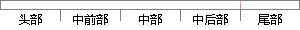

决策树（Decision Tree）既是一种在机器学习中经常用到的方法，也是一种在日常生活中我们潜意识里经常用到的方法。
片段位置图

相似结果|
相似片段 1：、聚类分析方法等。1) 决策树决策树(Decision Tree)是一种经常用到的技术，主要是利用一系列规则划分，建立树状图。可用于数据分析，也可用作预测。常用的算法有 CART、ID3、CHAID
|
※ 片段修改建议 ※
近似词参考：- 机器：机械 呆板
- 学习：进修
- 经常：常常 每每 时常
- 常用：经常使用
- 方法：方式 要领 法子
- 我们：咱们
- 经常：常常 每每 时常
- 常用：经常使用
- 方法：方式 要领 法子
系统自动生成语句：决策树（Decision Tree）既是一种在机械进修中常常用到的方式，也是一种在日常生活中咱们潜意识里常常用到的方式。
注：本片段修改建议为系统自动生成，仅供参考。